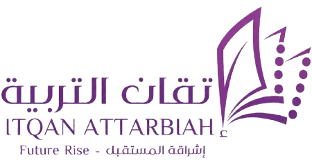

بنك إتقان المعرفي
«معرفتك رصيدك .. وذكاؤك مفتاح الفوز»
اسم المتسابق / الفريق:
المرحلة الدراسية:
الصفوف الأولية (1 - 3 ابتدائي)
الصفوف العليا (4 - 6 ابتدائي)
المرحلة المتوسطة
المرحلة الثانوية
دخول ساحة التحدي ⚡
بطل إتقان
الصفوف العليا
🔊
🌙
⛶
✕
50:50
👥 الجمهور
⏱️ +30ث
المجال: عام
45
جاري عرض السؤال...
أ
ب
ج
د
📊 رصيد الأسئلة والجوائز
سلم رصيد الجوائز
إغلاق
نسبة تصويت الجمهور
متابعة الحل
العودة للرئيسية